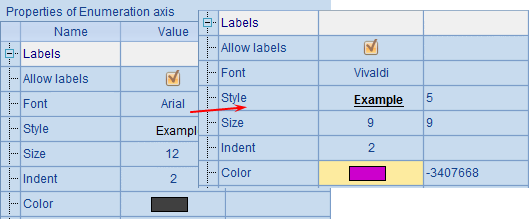
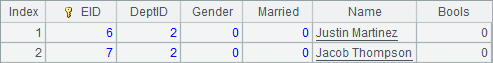
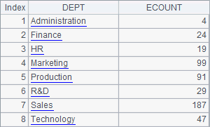
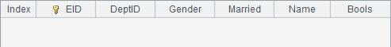

Similar to a stacked column chart, a pie chart can display data series and data categories at the same time. Yet they have differences. In a pie chart with both series and categories, the plotting results corresponding to data categories accumulate to form a ring or a circle, which represents the percentage of a certain category. Below is the plotting algorithm of a pie chart for showing results of different gym events. For the convenience of observation, A7 adds legends to the chart:
|
|
A |
|
1 |
=canvas() |
|
2 |
=demo.query("select * from GYMSCORE order by NAME,EVENT") |
|
3 |
=A1.plot("BackGround") |
|
4 |
=A1.plot("EnumAxis","name":"x","location":3,"polarX":0.55,"polarY": 0.4,"allowLabels":false) |
|
5 |
=A1.plot("NumericAxis","name":"y","location":4,"allowLabels":false) |
|
6 |
=A1.plot("Sector","axis1":"x","data1":A2.(NAME+","+EVENT),"axis2": "y","data2":A2.(SCORE)) |
|
7 |
=A1.plot("Legend","legendText":A2.id(EVENT),"columns":2,"x":0.2,"y":0.8) |
|
8 |
=A1.draw@p(400,400) |
Still, an enumeration axis is used as polar axis x, and a numeric axis used as radial axis y. A6 specifies data properties for the sector element. Note that Data1 includes both NAME values of series data and EVENT values of category data.

A8¡¯s plotting result is:

So, in a pie chart with both series and categories, polar axis data should contain category and series at the same time. Based on data of categories, a circle or a ring will be plotted, with data labels presented by leader lines changed to series.
By default a pie chart displaying percentage values with sector element will be plotted. You can only read the percentage of each event for each athlete. Modify the Stacking type property in A6:

Here Stacking type property is changed from the default Percent Stacked to Stacked. Thus data in each category will be accumulated by statistical values, producing the following plotting result:

As can be seen, accumulated by values, the slices for all athletes will be plotted based on their scores and thus the plotting result for each category will not be a complete circle or a complete ring any more. As a stacked column chart, the total scores of the athletes can be viewed clearly through this type of pie chart.